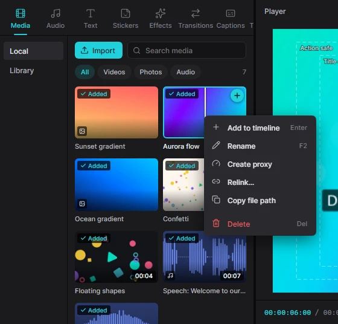

Для людейМонтаж3 хв читання
Імпорт медіа
Перш ніж монтувати, додайте у проєкт свої відео, фото й музику. Вони з’являться на вкладці Media — звідти їх кладуть на таймлайн.

Три способи імпорту
- Кнопка Import. Відкрийте вкладку Media й натисніть Import. З’явиться звичайне вікно вибору файлів Windows; виділіть один чи кілька файлів (утримуйте Ctrl або Shift) і натисніть «Відкрити».
- Клавіатура. Ctrl+I у будь-якому місці редактора. Те саме — Menu → Import media.
- Перетягування. Перетягніть файли — або цілу папку — з Провідника у вікно Kadr. З папки імпортуються всі відео, аудіо й фото, що в ній лежать.
Хід імпорту показує смуга прогресу. Мініатюри, «кіноплівка» (маленькі кадри всередині кліпів на таймлайні) та хвилі звуку створюються у фоні, тож монтувати можна одразу. Повторний імпорт того самого файлу нічого не змінить — Kadr його впізнає.
Kadr не копіює ваші файли, а лише запам’ятовує, де вони лежать. Тож не переміщуйте оригінали, доки відео не експортовано.
Підтримувані формати
| Тип | Файли |
|---|---|
| Відео | MP4, MOV, M4V, MKV, WebM, AVI, WMV, FLV, MTS / M2TS / TS, 3GP, MPG / MPEG, OGV, MXF та анімований GIF |
| Аудіо | MP3, WAV, AAC, M4A, FLAC, OGG, Opus, WMA, AIFF |
| Фото | JPG / JPEG, PNG, BMP, WebP, TIFF, HEIC / HEIF, AVIF, JFIF |
Підходить практично все, що читає FFmpeg, зокрема відео H.264, HEVC (H.265), ProRes і VP9. Відео з телефона, зняте вертикально, автоматично показується правильно.
Пошук медіа
- Кнопки All, Videos, Photos та Audio фільтрують список; число праворуч — скільки елементів показано.
- Search media шукає файли за назвою.
- Зелена позначка Added означає, що файл уже використано на таймлайні. Час у куті — тривалість кліпу; маленька іконка позначає фото та аудіо.
Як покласти медіа на таймлайн
- Наведіть мишу на картку й натисніть + або виділіть її й натисніть Enter. Відео й фото додаються в кінець головної доріжки; аудіо — на аудіодоріжку, починаючи з позиції курсора відтворення.
- Або перетягніть картку на таймлайн точно туди, куди треба. На головній доріжці кліп вставиться в найближчу склейку, а наступні кліпи посунуться праворуч. На доріжці накладення — або над верхньою доріжкою, що створить нову, — він стане «картинкою в картинці».
Фото отримують тривалість 5 секунд; потягніть за край кліпу на таймлайні, щоб подовжити або вкоротити. Далі — розділ Монтаж на таймлайні.
Меню картки
Клацніть картку правою кнопкою миші (або натисніть клавішу Menu):
| Пункт | Що робить |
|---|---|
| Add to timeline (Enter) | Те саме, що кнопка +. |
| Rename (F2) | Змінює назву в Kadr. Файл на диску лишається з тією самою назвою. |
| Create proxy | Створює легку копію для плавного відтворення — див. нижче. Лише для відео. |
| Relink… / Link media… | Вказати нове розташування файлу, якщо ви його перемістили чи перейменували. |
| Copy file path | Копіює повний шлях до оригінального файлу. |
| Delete (Del) | Прибирає елемент із проєкту. Якщо він використаний на таймлайні, Kadr попередить, скільки кліпів зникне разом із ним. Файл на диску не чіпається, а Ctrl+Z усе поверне. |
Проксі для 4K і важкого відео
4K, HEVC та інше «важке» відео може змушувати перегляд підгальмовувати. Проксі — це маленька легка копія (540p), яку Kadr використовує лише під час монтажу. Клацніть картку відео правою кнопкою й оберіть Create proxy; відсоток на картці показує прогрес, а потім у меню з’явиться Proxy created.
- Плеєр і таймлайн використовують проксі автоматично.
- Експорт завжди бере оригінальний файл, тож готове відео не втрачає якості.
- Проксі зберігаються в кеш-папці проєкту.
Ще один швидкий спосіб пришвидшити перегляд — знизити якість перегляду до Half або Quarter під плеєром. Див. Плеєр і перегляд.
Відсутні файли
Якщо ви перемістили, перейменували чи видалили оригінальний файл, його картка позначається як відсутня, а кліпи не відображаються. Клацніть картку правою кнопкою, оберіть Link media… і введіть новий повний шлях до файлу (наприклад, D:\Footage\beach.mp4). Усе на таймлайні повернеться як було.
Розділ Library
Пункт Library ліворуч на вкладці Media зарезервований для вбудованих стокових відео, яких поки немає. Готові фони, відліки й кольорові смуги шукайте серед згенерованих медіа на вкладці Stickers. Музику імпортуйте зі своїх файлів.